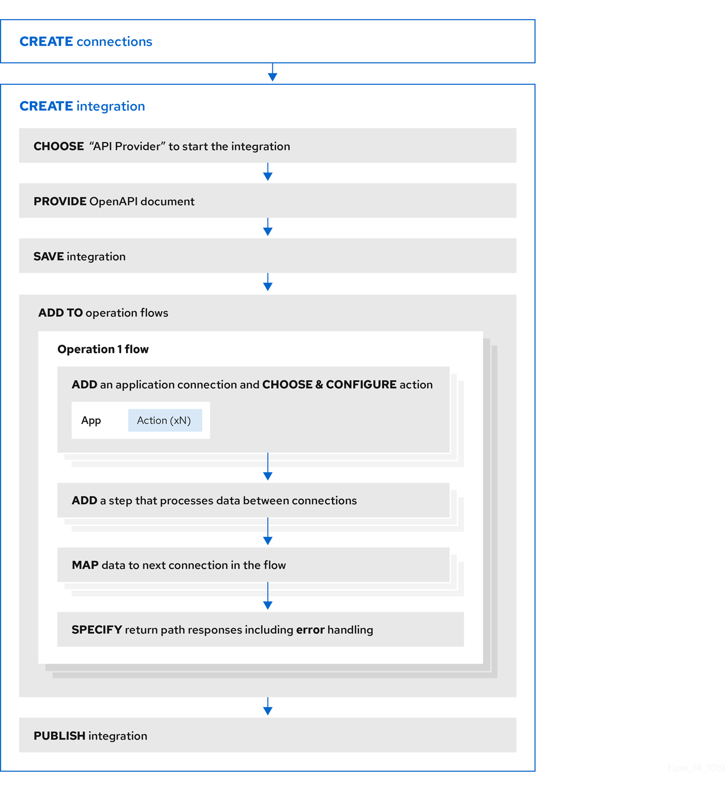

Creating an integration that is triggered by a REST API call
To trigger execution of an integration on demand, start the integration with a REST API description document that you provide. Integrations that start this way are referred to as API provider integrations. An API provider integration allows REST API clients to invoke commands that trigger execution of the integration.
When {prodname} publishes an API provider integration, any client with network access to the integration endpoints can trigger execution of the integration.
The following topics provide information and instructions for creating API provider integrations:
For a video that shows how to create, publish and test an API provider integration, see https://youtu.be/sox8SSqJ0zQ.
Benefit, overview, and workflow for creating API provider integrations
An API provider integration starts with a REST API service. This REST API service is defined by an OpenAPI 3 (or 2) document that you provide when you create an API provider integration. After you publish an API provider integration, {prodname} deploys the REST API service on OpenShift. The benefit of an API provider integration is that REST API clients can invoke calls that trigger execution of the integration.
An API provider integration has multiple execution paths, referred to as flows. Each operation that the OpenAPI document defines has its own flow. In {prodname}, for each operation that the OpenAPI document defines, you add connections and other steps to the execution flow for that operation. These steps process the data as required for the particular operation.
For example, consider a human resources application that calls a REST API service that {prodname} has made available. Suppose the call invokes the operation that adds a new employee. The operation flow that handles this call could:
-
Connect to an application that creates an expense report for new employee equipment.
-
Connect to a SQL database to add an internal ticket for setting up new equipment.
-
Connect to Google mail to send a message to the new employee that provides orientation information.
There are many ways to call the REST APIs that trigger integration execution, including:
-
A web browser page that takes data input and generates the call.
-
An application that explicitly calls the REST APIs, such as the
curlutility. -
Other APIs that call the REST API, for example, a webhook.
For each operation, you can edit its flow by:
-
Adding connections to the applications that need to process the data.
-
Adding steps between connections, including split, aggregate, and data mapping steps.
-
Mapping connection error messages to return codes in the HTTP response that finishes the flow. The response goes to the application that invoked the call that triggered execution of the integration.
The general workflow for creating an API provider integration is shown in the following diagram:

After you publish an API provider integration, in the integration’s summary page, {prodname} displays the external URL for your REST API service. This external URL is the base URL that clients use to call your REST API services.
For {prodname} environments on OCP, Red Hat 3scale discovery of API provider integrations might be enabled. In this case, 3scale publishes the URL for invoking services.
To test an API provider integration’s flows, you can use the curl utility.
For example, the following curl command triggers execution of the
flow for the Get Task by ID operation for the REST API service URL: https://i-task-api-proj319352.6a63.fuse-ignite.openshiftapps.com/api/.
The HTTP GET command is the
default request so there is no requirement to specify GET.
The last part of the URL specifies the ID of the task to get:
curl -k https://i-task-api-proj319352.6a63.fuse-ignite.openshiftapps.com/api/todo/1
How OpenAPI operations relate to API provider integration flows
An API provider integration’s OpenAPI document defines the operations that REST API clients can call. Each OpenAPI operation has its own API provider integration flow. Consequently, each operation can also have its own REST API service URL. Each URL is defined by the API service’s base URL and optionally by a subpath. REST API calls specify an operation’s URL to trigger execution of the flow for that operation.
Your OpenAPI document determines which HTTP verbs (such as
GET, POST, DELETE and so on) you can specify
in calls to your REST API service URLs. Examples of calls to
API provider URLs are in the
instructions for trying out the API provider quickstart example.
Your OpenAPI document also determines the possible HTTP status codes that an operation can return. An operation’s return path can handle only the responses that the OpenAPI document defines. For example, an operation that deletes an object based on its ID might define these possible responses:
"responses": {
"204": {
"description": "Task deleted"
},
"404": {
"description": "No Record found with this ID"
},
"500": {
"description": "Server Error"
}
}The following diagram shows an API provider integration that processes data about people. An external REST API client invokes the REST API URLs that are deployed by the API provider integration. Invocation of a URL triggers execution of the flow for one REST operation. This API provider integration has 3 flows. Each flow can use any connection or step that is available in {prodname}. The REST API along with its flows is one {prodname} API provider integration, which is deployed in one OpenShift pod.

After you specify an OpenAPI document for your API provider integration, you can update the document as needed while you define the execution flows for the API operations. To do this, click View/Edit API Definition in the upper right of a page in which you are editing the API provider integration. This displays your OpenAPI document in the API Designer editor. Edit and save the document to make changes that are reflected in {prodname}.
Considerations while editing the OpenAPI document:
-
operationIdproperties for synchronizationSynchronization between the versions of the OpenAPI document in the API Designer editor and in the {prodname} integration editor depend on a unique
operationIdproperty that is assigned to each operation that is defined in the document. You can assign a specificoperationIdproperty value to each operation, or use the one that {prodname} generates automatically. -
Request and response definitions
In each operation’s definition, you can supply a JSON schema that defines the operation’s request and response. {prodname} uses the JSON schema:
-
As the basis for the operation’s input and output data shapes
-
To display operation fields in the data mapper
-
-
No cyclic schema references
A JSON schema for an API provider integration operation cannot have cyclic schema references. For example, a JSON schema that specifies a request or response body cannot reference itself as a whole nor reference any part of itself through intermediate JSON schemas.
Creating an API provider integration
To create an API provider integration, provide
an OpenAPI document (.json, .yaml, or .yml file) that defines the operations that the integration
can perform. {prodname} creates an execution flow for each operation.
Edit the flow for each operation to
add connections and steps that
process integration data according to the requirements for that operation.
-
You are able to provide or define an OpenAPI document for the REST API operations that you want the integration to perform.
To experiment, download the raw version of the
task-api.jsonfile, which is an OpenAPI document for an API provider quickstart. You can upload this file when {prodname} prompts you to provide an OpenAPI document. Alternatively, you can specify the URL for the rawtask-api.jsonfile, which is https://raw.githubusercontent.com/syndesisio/syndesis-quickstarts/1.9/api-provider/task-api.json. -
You have a plan for the flow for each OpenAPI operation.
-
You created a connection for each application or service that you want to add to an operation’s flow.
-
In {prodname}, in the left navigation panel, click Integrations.
-
Click Create Integration.
-
On the Choose a connection page, click API Provider.
-
On the Start integration with an API call page:
-
If you have an OpenAPI document that defines the REST API operations, upload the OpenAPI document.
-
If you need to define the OpenAPI document, select Create a new OpenAPI 3.x document or Create a new OpenAPI 2.x document.
-
-
Click Next.
-
If you uploaded a document, review or edit it:
-
Click Review/Edit to open the API Designer editor.
-
Review and edit as needed.
Optionally, if your document uses the OpenAPI 2 specification, you can click Convert to OpenAPI 3 if you want the API Designer to convert your document to conform with the OpenAPI 3 specification.
-
In the upper right, click Save or Cancel to close the editor.
-
Click Next.
-
-
If you are creating a document, then in the API Designer editor that {prodname} opens:
-
Define the OpenAPI document as described in Design and develop an API definition with API Designer.
-
In the upper right, click Save, which closes the editor.
-
Click Next.
-
-
{prodname} displays a list of the operations that the OpenAPI document defines.
For each operation, define a flow that executes that operation.
Defining the operation flows for an API provider integration
The OpenAPI document that defines your REST API service defines the operations that the service can perform. After you create an API provider integration, you can edit the flow for each operation.
Each operation has exactly one flow. In an operation flow, you can add connections to other applications and services, as well as steps that operate on data between connections.
As you add to operation flows, you might find that you need to update
the OpenAPI document that the API provider integration is based on. To do this,
click View/Edit API Definition in the upper right of a page in which
you are editing your API provider integration. This displays your document
in the API Designer editor. In your OpenAPI
definition, as long as each operation has a unique operationId property,
you can save your updates in API Designer and {prodname} can synchronize the
API provider integration’s flow definitions to have your updates.
-
You created an API provider integration, gave it a name, and saved it.
-
You created a connection to each application or service that you want an operation flow to connect to. For details, see the information about creating connections.
-
{prodname} is displaying the list of operations that the API defines.
-
In the Operations list page, for the operation whose flow you want to define, click Create flow.
-
For each connection that you want to add to this flow:
-
In the flow visualization, click the plus sign to add a connection at that location.
-
Click the connection that you want to add.
-
Select the action that you want this connection to perform.
-
Configure the action by entering data in the labeled fields.
-
Click Next.
Add all desired connections to the flow before you continue.
-
-
In this operation flow, to process data between connections:
-
In the flow visualization, click the plus sign where you want to add a step.
-
Click the step that you want to add.
-
Configure the step by entering data in the labeled fields.
-
Click Next.
For help, see Adding steps between connections.
If you want to add another step that processes data between connections, repeat this subset of instructions.
-
-
Map data to fields in the next connection:
-
In the flow visualization, check for data type mismatch
 icons, which
indicate that the connection cannot process the incoming data. You need
to add a data mapper step here.
icons, which
indicate that the connection cannot process the incoming data. You need
to add a data mapper step here. -
For each data mismatch icon in the flow visualization:
-
Click the plus sign that is just before that step.
-
Click Data Mapper.
-
Define the needed mappings. For help, see Mapping integration data to fields in the next connection.
-
Click Done to add the data mapper step to the flow.
-
-
-
In the flow visualization, on the Provided API Return Path step, click Configure.
Every API provider integration finishes each operation flow by sending a response to the REST API caller that triggered execution of the operation flow. The response contains one of the return codes that you configure for the Provided API Return Path step that finishes the operation’s flow. Configure the return path step as follows:
-
Under Default Response, in the Return Code field, accept the default response that {prodname} displays, or click the down caret and scroll to select the default response that you want. The flow sends this response when execution of the operation flow does not return any of the configured error responses. Typically, the default response return code indicates a successful operation.
-
Under Error Handling, indicate whether you want to include the error message in the body of the returned message.
During development, you typically want to return the error message. In production, however, you might want to hide the error message if it contains sensitive or proprietary information. The error message is a JSON formatted string that contains
responseCode,category, andmessageelements, for example:{ responseCode: 404, category: "SQL_ENTITY_NOT_FOUND_ERROR", message: "SQL SELECT did not SELECT any records" } -
Under Error Response Codes, {prodname} displays an entry for each error that a connection in the flow might return. For each error, accept the 200 All is good default return code or click to select another HTTP status return code.
The return codes that you can select from, are the return codes that the OpenAPI document defines for the operation that this flow executes. If {prodname} does not display a return code that you need, you can edit the OpenAPI document to add it.
To do this, in the upper right, click View/Edit API Definition. Edit the OpenAPI document as needed. When you are done, save the OpenAPI document. {prodname} returns to editing the Provided API Return Path and reflects any changes that you saved.
-
Click Next to complete configuration of the return path.
-
-
When this flow has all needed connections and steps and there are no data mismatch icons, or when you no longer want to edit the flow for now, do one of the following:
-
Publish — To start running the integration, in the upper right, click Publish. This builds the integration, deploys the REST API service to OpenShift, and makes the integration available to be executed. You can publish the integration each time that you complete the creation of an operation’s flow or each time that you edit an operation’s flow.
-
Save — To display the list of operations, in the upper right, click Save.
-
Repeat this procedure to edit another operation’s flow.
-
Testing API provider integrations running on one of these platforms:
-
OpenShift Online
-
OpenShift Dedicated
-
OpenShift Container Platform when API discovery is disabled
You can use the
curlutility to confirm that the integration is working as expected. In thecurlcommand, specify the external URL that {prodname} displays after it publishes the API provider integration. For examples of doing this, see Testing the example API provider quickstart integration. -
-
Testing API provider integrations running on OpenShift Container Platform when API discovery is enabled
Red Hat 3scale publishes your API provider integration. To test the integration, open the 3scale dashboard to obtain the integration’s URL.
You can disable discovery for an API provider integration if, for example, you do not want Red Hat 3scale to control access to the integration’s API or you want to test the API provider integration in {prodname}. If you disable discovery, {prodname} republishes the integration and provides an external URL for invoking and testing integration execution. To do this, in {prodname} go to the integration’s summary page. On this page, click Disable discovery. {prodname} republishes the integration and provides the integration’s URL. For examples of how to test an integration, see Testing the example API provider quickstart integration. After testing, you can re-enable discovery for the API provider integration so that 3scale publishes it.
You can enable or disable discovery for each API provider integration.
Importing and publishing the example API provider quickstart integration
{prodname} provides an API provider quickstart integration that you can import into your {prodname} environment. This quickstart includes an OpenAPI document for a task management API. After importing the quickstart integration, you can examine the flows and then publish the integration. After you complete the procedure described below, the TaskAPI integration is running and ready to be executed.
The API provider quickstart helps you quickly learn how to configure, publish, and test an API provider integration. But it is not a real-world example of how useful an API provider integration can be. For a real-world example, suppose that you already used {prodname} to publish several simple integrations. You could define an OpenAPI document for triggering execution of those integrations. To do this, you would edit the flow for each OpenAPI operation to be almost the same as the simple integrations that you already published.
-
{prodname} is open in a browser.
-
Import the TaskAPI quickstart integration:
-
Go to {syndesis-quickstart-url}/api-provider and download
TaskAPI-export.zip. -
In {prodname}, in the left navigation panel, click Integrations.
-
In the upper right, click Import.
-
Drag the
TaskAPI-export.zipfile that you downloaded to the Import page. {prodname} indicates that it has successfully imported the file. -
In the left navigation panel, click Integrations to see an entry for the TaskAPI integration that you just imported. Although the entry indicates that configuration is required, this integration is ready to publish.
-
-
In the TaskAPI entry, click
 and
then click Edit to display a list
of the operations that this API provides.
and
then click Edit to display a list
of the operations that this API provides. -
To examine the flows for each operation:
-
Click its Edit flow button to display the visualization for that flow.
Each flow already has a database connection, one or more data mapper steps, and a Provided API Return Path step that finishes the flow.
-
For the Invoke SQL step, click Configure to see the SQL statement that the connection executes. Then click Cancel to return to that operation’s visualization flow.
-
For a data mapper step, click Configure to see the mappings. Then click Cancel to return to the visualization.
-
For the Provided API Return Path step, which is the last step in every operation’s flow, click Configure to see the HTTP return codes that the operation might send to the caller. Click Cancel to return to the visualization.
-
After examining one operation’s flow, click the Integrations> TaskAPI> Operation drop down menu and then select another operation.
-
Repeat this subset of steps to examine each flow.
-
-
After examining the flows, click Publish, edit the integration name if you want to, and then click Save and publish.
{prodname} displays the summary page for this integration and shows publication progress as it assembles, builds, deploys, and starts the integration.
-
When the TaskAPI integration summary page displays Running, {prodname} displays the external URL for the Task API service. It looks something like this:
https://i-task-api-proj319352.6a63.fuse-ignite.openshiftapps.com/api/This is where {prodname} makes the Task API service available. REST API calls specify URLs that start with this base URL.
If you are using {prodname} on OpenShift Container Platform, if the external URL is not on the integration’s summary page, then an administrator has enabled Red Hat 3scale discovery. This means that Red Hat 3scale controls access to the integration’s API and also publishes your API provider integration. To test the integration, open the 3scale dashboard to obtain the integration’s URL.
If you do not want Red Hat 3scale to control access to the integration’s API, you can disable discovery. You do this in {prodname} by viewing the integration’s summary page. On this page, click Disable discovery. {prodname} republishes the integration and provides an external URL for invoking integration execution.
You can enable or disable discovery for each API provider integration.
Testing the example API provider quickstart integration
When the {prodname} TaskAPI quickstart integration is running, you can
invoke curl utility commands that send HTTP requests to the Task API service.
How you specify the HTTP request determines the flow that the call
triggers.
-
{prodname} indicates that the TaskAPI integration is Running.
-
If your {prodname} environment is running on OCP, {prodname} is not configured to expose APIs to 3scale or you disabled discovery for the TaskAPI integration.
-
In {prodname}, in the left navigation panel, click Integrations.
-
In the TaskAPI integration entry, click View to display the integration’s summary.
-
Copy the integration’s external URL.
-
In a terminal, invoke a command such as the following to assign the integration’s external URL to the
externalURLenvironment variable. Be sure to replace the URL in this sample command with the URL that you copied.export externalURL="https://i-task-api-proj319352.6a63.fuse-ignite.openshiftapps.com/api"
-
Invoke a
curlcommand that triggers execution of the flow for the Create new task operation:curl -k --header "Content-Type: application/json" --request POST --data '{ "task":"my new task!"}' $externalURL/todo-
-kallowscurlto proceed and operate even for server connections that are otherwise considered insecure. -
--headerindicates that the command is sending JSON format data. -
--requestspecifies the HTTPPOSTcommand, which stores data. -
--dataspecifies the JSON format content to be stored. In this example the content is{ "task":"my new task!"}. -
$externalURL/todois the URL to invoke.This command sends an HTTP
POSTrequest to the Task API service, which triggers execution of the Create new task operation’s flow. Flow execution adds a new task to the sample database and returns a message such as the following to indicate what it did:
{"completed":false,"id":1,"task":"my new task!"} -
-
Invoke a
curlcommand that triggers execution of the flow for the Fetch task by ID operation:curl -k $externalURL/todo/1
To obtain a task, the
curlcommand needs to specify only the URL. The HTTPGETcommand is the default request. The last part of the URL specifies the ID of the task to get. -
Invoke a
curlcommand that triggers execution of the flow for the Delete task for ID operation:curl -k -X DELETE $externalURL/todo/1
This command invokes the HTTP
DELETEcommand with the same URL as the command that obtained a task by its ID.